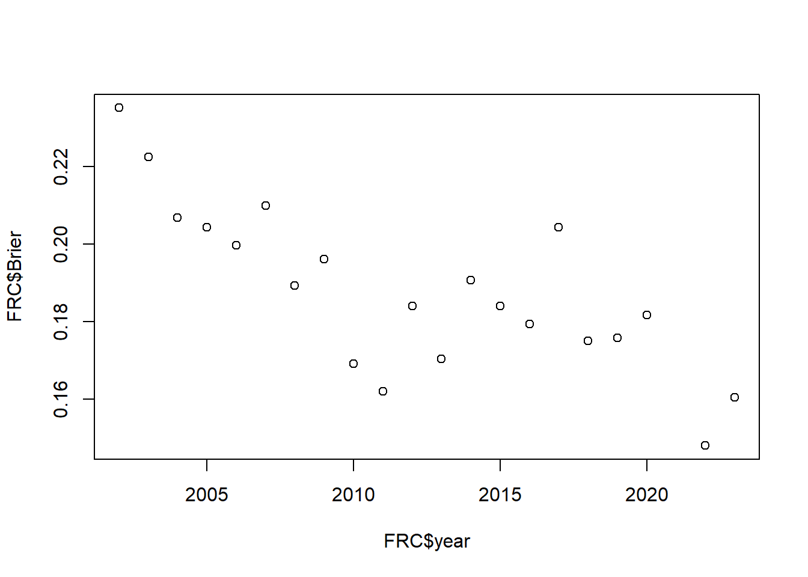

dtAll <- read.csv("matches.csv")
dtUse <- subset(dtAll, status=="Completed" & offseason=="f",
select=c(year, event, playoff, comp_level, winner, epa_win_prob))FIRST Robotics Competition - Winning Chances
Brier score
prediction assessment
Evaluating the predicted winning probabilities against the actual outcomes.
Introduction
The FIRST Robotics Competition (FRC) is a high school level robotics competition, in which “[u]nder strict rules and limited time and resources, teams of high school students are challenged to build industrial-size robots to play a difficult field game in alliance with other teams.” It combines “the excitement of sport with the rigors of science and technology”.
One of the key features of FRC is that robot/team competes not individually, but in alliance with other teams. So, it is important for teams to “scout” other teams as potential alliance partners. Various methodologies/models to evaluate each team’s potential contribution were developed. One of the popular models is called Expected Points Added (EPA) model that produces predicted probabilities of winning for the alliance based on the past performances of each team in the alliance, as well as teams in the opposition alliance. As such, there is a desire/need to assess how good the EPA model prediction is.
Brier score originated with weather forecast research. It was designed to evaluate the predicted probabilities against the actual outcomes and is straight forward to calculate. In this worksheet, we’ll evaluate the predicted winning probabilities by the EPA model against the actual FRC outcomes.
Data
In this lesson, we will use the EPA data and competition outcomes calculated and compiled by the website statbotics.io.
Below is a description of the variables:
Variable Descriptions
| Variable | Description |
|---|---|
| year | the year/season of the FRC event |
| event | unique identifier for each FRC event |
| playoff | “t” for playoff match; “f” for qualifying match |
| comp_level | “qm” for qualifying match; “sf” for semifinals match; “f” for finals match |
| winner | winning alliance (“red” or “blue”) of the match |
| epa_win_prob | predicted winning probability for the Red Alliance by EPA model |
The data covers the competition seasons from 2002 to 2023, except for 2021 due to the COVID pandemic.
unique(dtUse$year) [1] 2002 2003 2004 2005 2006 2007 2008 2009 2010 2011 2012 2013 2014 2015 2016
[16] 2017 2018 2019 2020 2022 2023For our example, we will use a particular event, the Hopper Division competition at the 2023 FRC World Championship in Houston, to illustrate the calculation of Brier score.
dt2023hop <- subset(dtUse, event=="2023hop")Below is what the raw data looks like. Each row is a match between a Red alliance and a Blue alliance. Each alliance consists of three robots/teams.
Brier Score
For match \(i\), let \(f_i\) denote the probability forecast. In our case, it is the predicted winning probability for the Red Alliance by EPA model, i.e., the variable epa_win_prob. Let \(o_i\) denote the match outcome: \(o_i=1\) when the Red alliance won and \(o_i=0\) when the Blue alliance won. The Brier score for match \(i\) is calculated as \((f_i - o_i)^2\). For example, suppose it is predicted that the Red alliance will win with 80% probability, i.e., \(f_i=0.8\), if the actual outcome is that the Red alliance won, the Brier score is \((0.8-1)^2=0.04\). If the actual outcome is that the Blue alliance won, the Brier score is \((0.8-0)^2=0.64\).
Brier score is a quantity bounded by \(0\) and \(1\). Brier score of \(0\) means correctly predicting the outcome with 100% certainty. 50:50 random guess would give a Brier score of \(0.25\). The overall Brier score for all the matches during a competition event or season is simply the average of individual match scores: \[\frac{1}{N} \sum_{i=1}^N (f_i - o_i)^2\] The following table shows the calculation for each match.
The overall Brier score for the 2023 Hopper Division event is 0.1366352, which is slightly worse than the half way between perfect \(0\) and random guess \(0.25\).
Your Turn
Now, it’s your turn. Please use the data from the Turing Division competition at the 2022 FRC World Championship to calculate the average Brier score for the event. You should find the data in the file dt2022tur.csv.
dt2022tur <- subset(dtUse, event=="2022tur")
write.csv(dt2022tur, "dt2022tur.csv")Over the Years
Since we have the data for more than 20 years, we could answer an interesting question: did the predictive ability of the EPA model change over the years?
We build two simple functions to do the calculations.
Two Functions
The first function calculates the Brier score for a given data set. Occasionally, a game can end in a draw. We assign the value of \(0.5\) to \(o_i\) for a draw.
calcBS <- function(dt){
n <- nrow(dt)
outcome <- rep(NA, n)
outcome[dt$winner=="red"] <- 1
outcome[dt$winner=="draw"] <- 0.5
outcome[dt$winner=="blue"] <- 0
diff <- dt$epa_win_prob - outcome
Brier <- mean(diff^2)
c(n=n, Brier=Brier)
}The second function separates the data by year and does the calculation for each year.
byYear <- function(dt=dtUse) {
yrs <- unique(dt$year)
m <- length(yrs)
size <- Brier <- rep(NA, m)
for (i in 1:m) {
dat <- subset(dt, year==yrs[i])
res <- calcBS(dt=dat)
size[i] <- res[1]
Brier[i] <- res[2]
}
data.frame(year=yrs, n=size, Brier=Brier)
}
FRC <- byYear()Below are the Brier scores from 2002 to 2023.
knitr::kable(FRC)| year | n | Brier |
|---|---|---|
| 2002 | 2197 | 0.2351889 |
| 2003 | 3173 | 0.2225493 |
| 2004 | 3198 | 0.2069319 |
| 2005 | 2059 | 0.2043631 |
| 2006 | 3283 | 0.1997467 |
| 2007 | 3563 | 0.2099309 |
| 2008 | 4036 | 0.1892942 |
| 2009 | 4567 | 0.1961946 |
| 2010 | 5564 | 0.1691369 |
| 2011 | 6224 | 0.1621286 |
| 2012 | 7707 | 0.1841302 |
| 2013 | 8242 | 0.1704309 |
| 2014 | 10663 | 0.1906669 |
| 2015 | 11810 | 0.1841460 |
| 2016 | 13286 | 0.1794790 |
| 2017 | 15429 | 0.2043697 |
| 2018 | 16930 | 0.1750251 |
| 2019 | 18022 | 0.1758972 |
| 2020 | 4634 | 0.1817734 |
| 2022 | 14645 | 0.1480655 |
| 2023 | 16319 | 0.1604984 |
It is interesting to note that the predictive ability of the EPA model has improved for the past 20 years. Since the model has not changed, I believe the improvement comes from established teams becoming more consistent and predictable. Meanwhile, the pool of newer, less experienced teams has stayed healthy.
plot(FRC$year, FRC$Brier)